1、概述
在火山核心库中存在大量的类，每个类都有多个方法，这些方法在火山中又进行了分类，不同类型的方法其调用方式也不一样。
本节的内容主要利用火山帮助页，正确的识别不同类型的方法，以及如何正确的使用这些方法，从而快速掌握火山核心库的使用。
火山中的方法分类如下：
1. 通常方法
2. 静态方法
(1) 普通静态方法
(2) 支持动态方式调用的静态方法
(3) 全局静态方法
3. 属性写方法
4. 属性读方法
5. 事件方法
6. 虚拟方法
2、通常方法的识别与调用
识别：
打开某类的帮助页，如果此类拥有通常方法就可以在帮助页中看到“通常方法”的分类。
如下图所示为“编辑框”组件的部分通常方法：
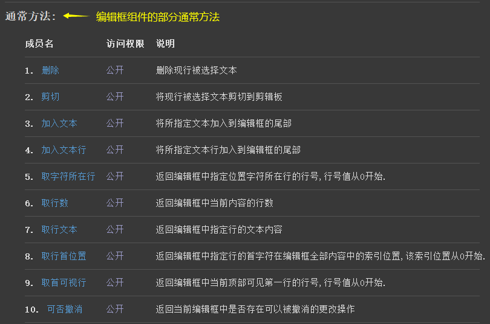
点击帮助页中的某个方法，也可以在方法的类别处看到“通常方法”的关键字。
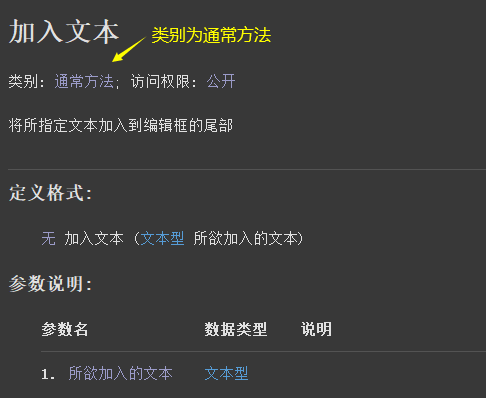
调用：
通常方法调用时通常需要通过类对象来访问。
如下图所示，通过编辑框组件的名称，就可以调用当前组件中的通常方法。
除了这种方式，如果某个方法返回一个类对象，也可以直接通过类对象来调用，如: 方法1 ().XX方法 ()
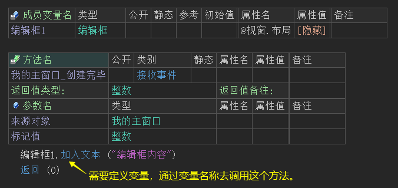
3、静态方法
在静态方法中，又分为“普通静态方法”、“支持动态格式调用的静态方法”和“全局静态方法”，其识别和调用方式均不相同，分别如下：
3.1 普通静态方法的识别与调用
识别：
打开某类的帮助页，如果此类拥有静态方法就可以在帮助页中看到“静态方法”的分类。
如下图所示为“加解密类”中的部分静态方法：
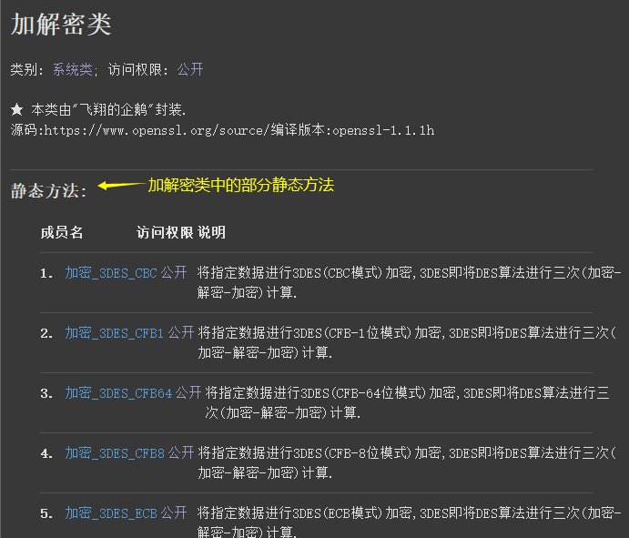
点击帮助页中的某个静态方法，也可以在方法的类别处看到“静态方法”的关键字，访问权限为“公开、静态”。
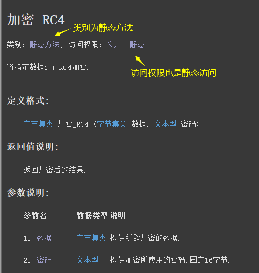
调用：
静态方法调用时可直接通过类名访问。
如下图所示，通过“加解密类”就可以直接访问“加密_RC4”方法。
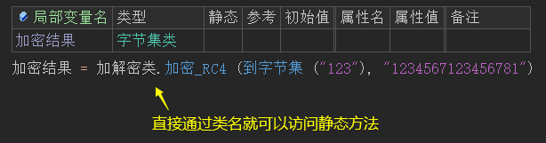
3.2 支持动态格式调用的静态方法，如何识别与调用
识别：
本类型方法本质上也是静态方法，只是增加了“支持动态格式调用”的特性。
在帮助页中会全部归类为“静态方法”，至于是否支持“动态格式调用”则需要打开方法的帮助页进行查看。
如下图所示为“JSON对象类”中的部分静态方法：
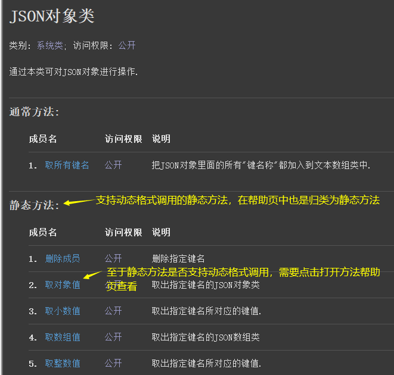
如果在方法的帮助页中没有看到“支持以动态格式调用”关键字，就证明本方法为普通的静态方法。
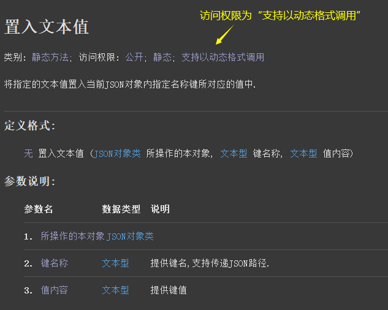
调用：
本方法有两种调用方式：
(1) 通过类对象访问：其第一个参数被移动到方法访问对象上，这种方式在编译时将被自动转换为第一种方式。
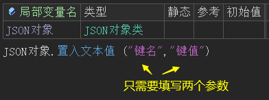
(2) 通过类名访问：标准的静态方法访问方式。
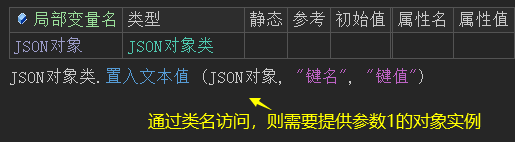
3.3 全局静态方法的识别与调用
识别：
打开某类的帮助页，如果此类拥有全局静态方法就可以在帮助页中看到“全局静态方法”的分类。
如下图所示为“文本类”中的部分全局静态方法：
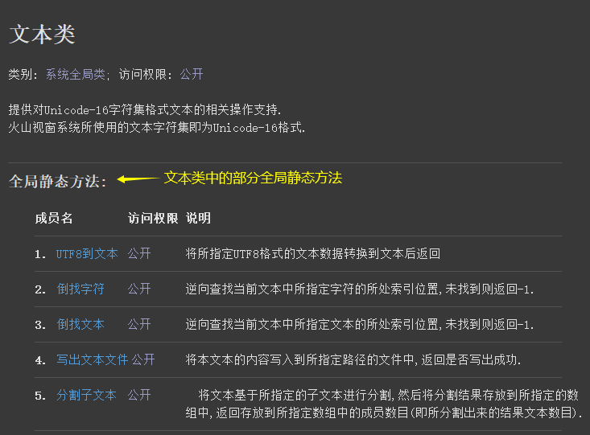
点击帮助页中的某个方法，也可以在方法的类别处看到“全局静态方法”的关键字。
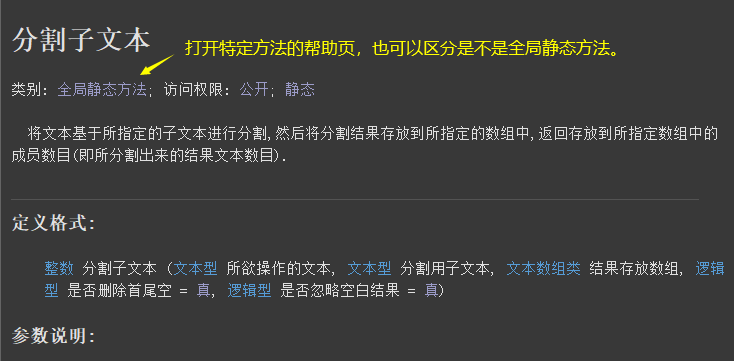
调用：
全局静态方法可以直接通过方法名进行访问。
如下图所示，不需要输入类名、也不需要定义变量就可以直接调用“分割子文本()”方法。
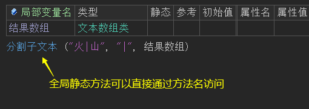
4、属性写方法的识别与调用
识别：
打开某类的帮助页，如果此类拥有属性写方法就可以在帮助页中看到“属性写方法”的分类。
如下图所示为“编辑框”组件中的部分属性写方法：
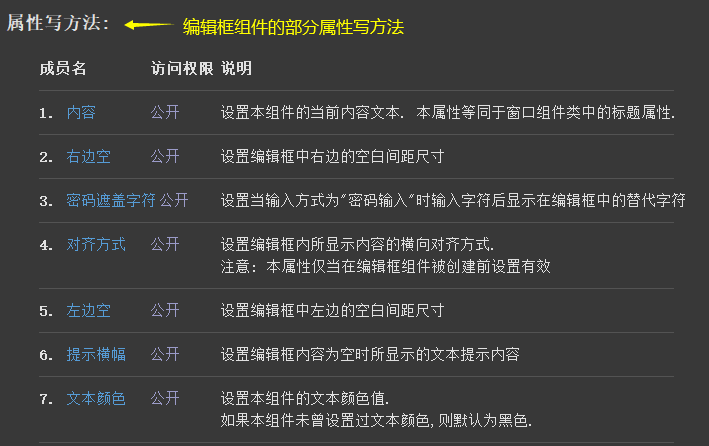
点击帮助页中的某个属性写方法，也可以在方法的类别处看到“属性写方法”的关键字。
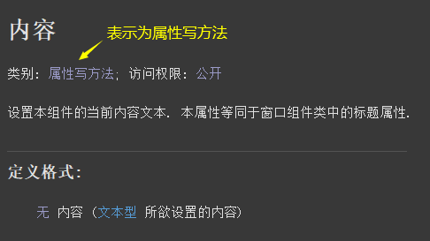
调用：
属性写方法有两种调用方式，如下图所示：
通过变量属性表或代码语句调用。
注：如果属性值为类数据类型(常量类除外)，不支持在表格中调用。
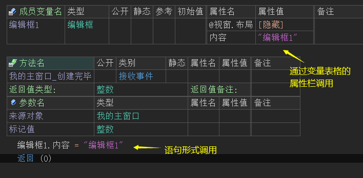
5、属性读方法的识别与调用
识别：
打开某类的帮助页，如果此类拥有属性读方法就可以在帮助页中看到“属性读方法”的分类。
如下图所示为“编辑框”组件中的部分属性读方法：
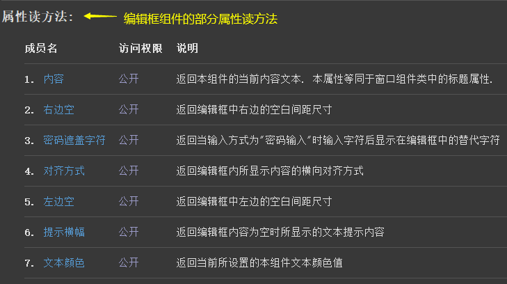
点击帮助页中的某个属性读方法，也可以在方法的类别处看到“属性读方法”的关键字。
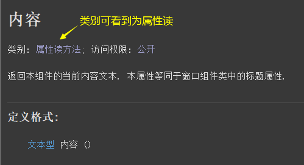
调用：
通过类对象调用属性名即可。
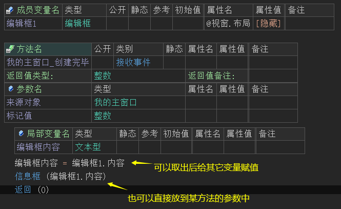
6、事件方法的识别与调用
5.1 识别与调用
识别：
打开某类的帮助页，如果此类拥有事件方法就可以在帮助页中看到“事件定义方法”的分类。
如下图所示为“编辑框”组件中的部分事件方法：
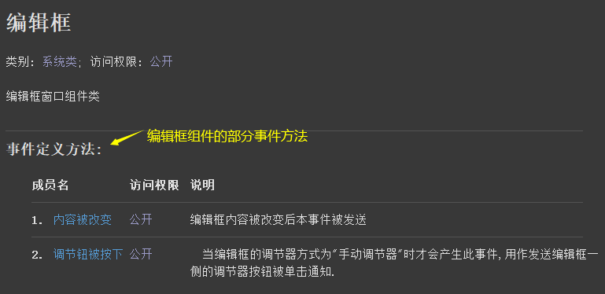
点击帮助页中的某个事件方法，也可以在方法的类别处看到“事件定义方法”的关键字。
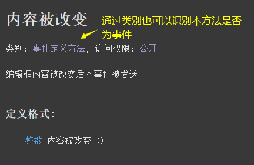
调用：
事件调用共有两种方式，如下：
(1) 通过变量“类型”的小按钮可以添加事件。
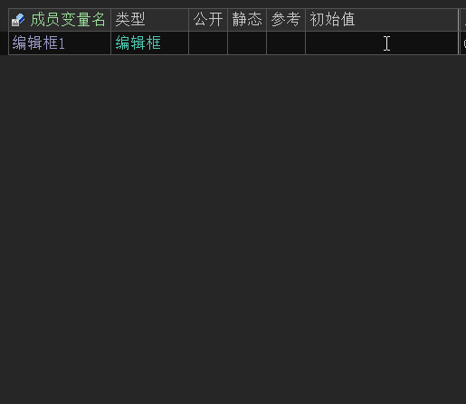
(2) 通过右键“类型”添加。
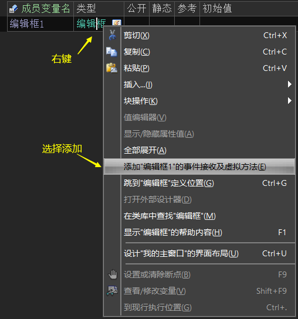
选择“添加XX的事件接受及虚拟方法”菜单后，会弹出一个事件选择窗口，选择自己要添加的事件进行添加即可。
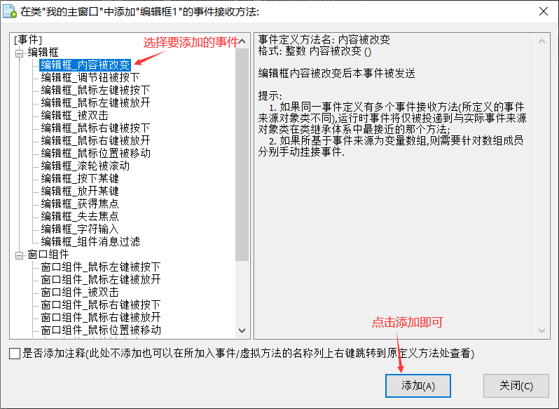
5.2 事件不被触发时的处理方案
当事件不触发时可通过“挂接事件”解决。
7、虚拟方法的识别与调用
识别：
打开某类的帮助页，如果此类拥有虚拟方法就可以在帮助页中看到“虚拟方法”的分类。
如下图所示为“窗口”中的部分虚拟方法：
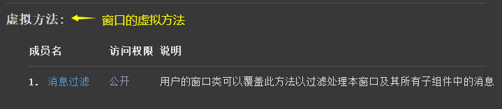
点击帮助页中的某个虚拟方法，也可以在方法的类别处看到“虚拟方法”的关键字。
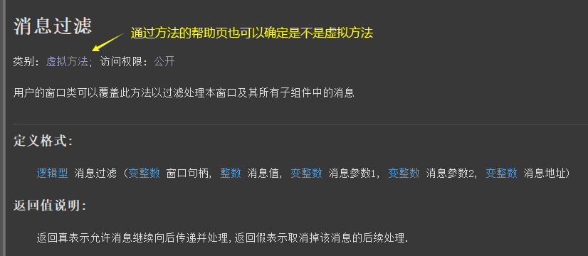
调用：
虚拟方法调用共有两种方式，如下：
(1) 通过“类名”的小按钮可以添加虚拟方法。
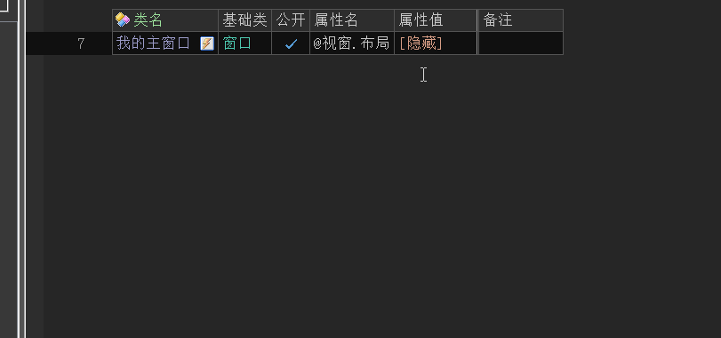
(2) 通过右键添加。
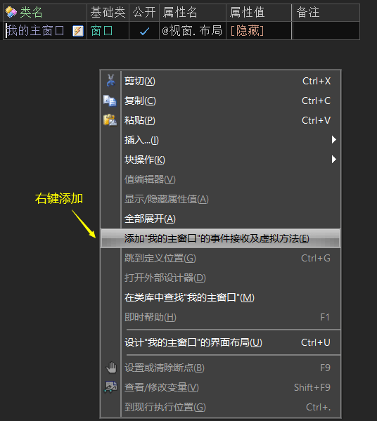
选择“添加XX的事件接受及虚拟方法”菜单后，会弹出一个选择窗口，选择自己要添加的虚拟方法进行添加即可。
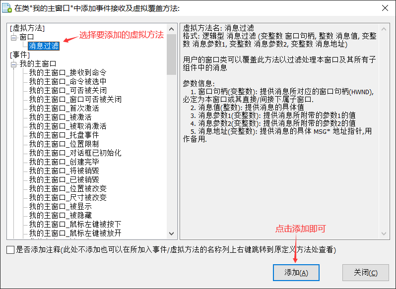
虚拟方法的作用：
如果在火山中，某个类中的某个方法不能满足使用需求，但是我们又不想重新定义一个方法来操作，这个时候就可以利用火山的“虚拟方法”来实现对这个方法进行重写，这样的重写操作在火山中就称为虚拟方法。
具体可看“定义虚拟方法”中的示例。